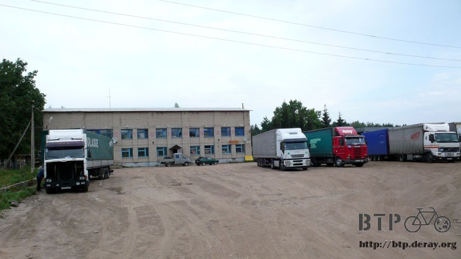
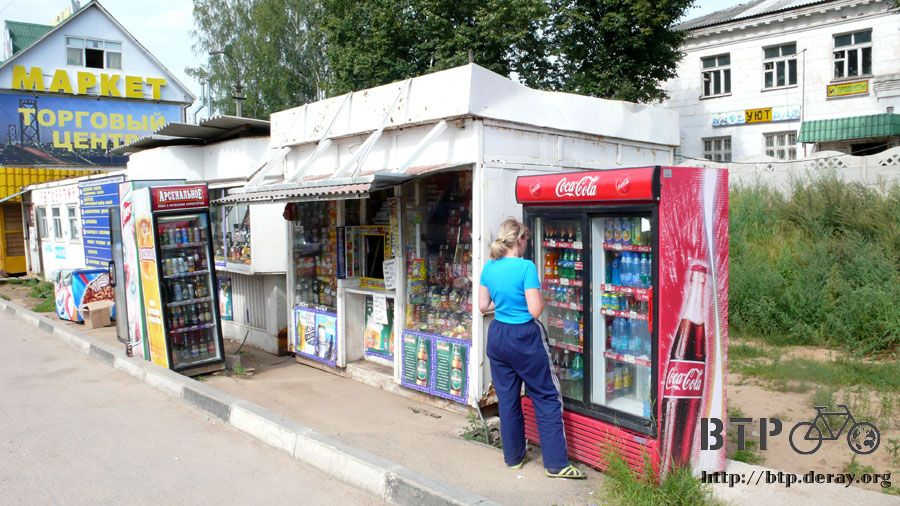

小叮噹的口袋
晚上十點就閉上眼睛，找到這個過夜地點很滿意，完全不擔心會被奇怪的人打擾，放鬆戒備的大睡一覺，感覺真舒服。
一覺睡到天亮，鬧鐘六點整準時響起，在這之前完全是深深的熟睡，很訝異露營還可以睡得如此安穩，賴床再睡它一小時。
七點半的時候離開穀倉，八點半到加油站吃早餐，先來一瓶果汁止渴，加油站沒賣什麼熱食，買一條蛋糕也是一餐了。
快速的整理完遊記，把握涼快的天氣繼續騎車，往白俄羅斯的路距離雖然不遠，但出乎意料的，都是爬坡的山路路段。
雖然不想給自己壓力，但是看著倒數計時的簽證效期還是會緊張，而且還要做最壞的打算，就是白俄羅斯不給入境。
萬一真是如此，那還得用剩下不到一個星期的時間往北狂奔到聖彼得堡，最好的辦法就是早一點到邊界才能放下心中的大石頭。
汗流浹背的爬坡騎山路，中午的時候看見餐廳的指示牌，但是找不到餐廳的位置。
是這一棟外表看起來像倉庫的房子嗎？

入口處養了一隻大狼狗，上面的小屋寫著『OXPAHA?』，因為那個問號的緣故讓我很想知道寫的到底是什麼？
騎車只覺得累和口渴，大太陽的天氣沒什麼胃口吃飯，只想買瓶飲料止渴就上路。
低調的房子的確是餐廳沒錯，一進到裡面看見很多人拿著餐盤在排隊，不知不覺就跟著排起隊來，看到人家吃就想跟著吃的個性真是很難改呀@@"
點餐很容易，眼睛看到的東西想吃的就用手指一下，媽媽就會幫忙裝盤。
最後得到這一盤豐盛的食物，蔬果沙拉、馬鈴薯泥配上燉肉，再加點了香腸和烤雞腿，湯品是蘑菇馬鈴薯湯，灑上一堆鹽巴跟胡椒之後全部吃光光。
從餐廳裡面看不到外面的小多，在這種情形吃飯的話，每隔一～三分鐘我就會放下餐具走到門口看一下小多的情形，然後回座位繼續吃。
前兩次出去查看都沒有異狀，第三次出去看的時候小多就被用完餐的卡車司機給包圍了，一樣是卡車司機，俄羅斯的還蠻有水準。
單純用眼光打量，不會動手亂碰，吃飯的時候擔心小多被牽走，人在外面查看的時候則擔心還沒吃完的食物會被收走。
吃完飯買點飲料和巧克力，路上可以當點心，飲料類的訂價非常的機車，越小瓶越貴，越大瓶越便宜。
每次都衡量自己口渴的情形，大多情形下都盡量買兩公升裝的，先一口氣喝掉一公升，剩下的再帶著走也不會太重。

兩公升的寶特瓶很難攜帶，水壺架放不下，包包目前也都是很滿，沒可能多塞這一個龐然大物。
所以只好拿在手上，但是拿著又很重，而且手不好握著把手，騎車很不穩。
這時候就會開始碎碎唸自己沒事買這麼大瓶的要幹嘛，站在路邊拼命灌也喝不完，花錢買的東西當然不可能丟掉，可是拿著超累贅。
這樣的狀況循環的發生了好幾次之後，終於研究出如何帶著兩公升寶特瓶騎車的好方法。

放在外套裡面，反摺的外套可以讓寶特瓶不會掉下去，喝得剩半罐的也不會多重，兩隻手也可以空出來專心騎車。
當停下車拉開外套口袋拿出汽水喝的時候，就會覺得自己很像小叮噹，可以從胸口的口袋拿去目前最需要的道具。
雖然這一路已經四百公里都是山坡路，感覺有點累，所幸路面都是超一流的水準，稍稍減輕爬坡的辛苦。
通往白俄羅斯的路沿路都很寬敞，單線至少都是雙線道以上，小多也有夠寬的路肩可以安心的走 ，再加上大卡車非常客氣的繞著我走，安全無虞。
多了兩個車輪沒增加多少負擔，反而讓騎車更加的安全，這倒也是當初沒想到的好處。
加油站都會在路邊的入口處放置牌子，說明這個加油站有哪些服務，一般都會寫營業時間、有沒有商店、廁所等等。
這一間有商店跟咖啡，在大太陽下撐了四個小時之後，總算能夠中場休息一下。
買了一瓶包裝很漂亮的綜合野莓汁，坐在裡面吹冷氣涼爽半小時。
拿下頭巾整顆頭放在水龍頭底下沖冰水的時候，有一種用水將火澆熄的感覺，頭頂熱得都要冒煙了。
上路之前都會將頭巾弄得溼答答包在頭上，沿路就這麼滴水保持涼快，身上穿的是剛剛洗過的微濕上衣，已經穿兩天了，該簡單洗一下不然又會開始發酸。
昨天才撿到五塊錢，今天又撿到一個，請相信我這真的是撿到的，不是因為遊記沒有內容自己把錢丟到地上。
連續兩天都有意外的收入，運氣好得驚人，當作幸運錢幣收起來不要花掉好了。
順便說明一下俄羅斯盧布，它的幣值比台幣還要值錢，但是通貨膨脹沒有台幣那麼大。
硬幣有五元、兩元跟一元，其它就是以分為單位的零頭，紙鈔最小面額是十元，最大則是五千，但是很罕見，一般情況拿一千盧布出來都要先問店家找不找得開。
當在加油站涼快休息的時候，前面的山路正在下一場大雨，雨停了我才經過這裡，再度逃過一劫，真擔心這些好運會在這兩天就用光光。
有一位女作家是我很喜歡的，她叫邱妙津，目前已經不在人世，每次看到整片的芒草就會想到她，順便推薦一下她的『鱷魚手記』。
里程表顯示一百三十七公里的時後看見這個牌子，這時候是晚上七點，再騎一個小時就可以吃晚餐了。
本來餓得想拆一條蛋糕墊肚子，再忍一下吧～騎到餐廳就可以吃大餐，到時今天也可以準備劃下句點了。
因為路標都只標示著明斯克，完全沒有任何關於國境的標示，讓我不禁懷疑自己是不是已經穿越了國境抵達白俄羅斯。
因為這兩國之間沒有設任何的關卡檢查證件，兩國人民可以隨意通行，一不注意就過境也是有可能的事情。
十八公里可以說很遠也可以說很近，在肚子餓的時候是非常難熬的一段路，一個小時後總算到了餐廳。
餐廳外頭停的都是長途貨運卡車和長途巴士，停車場大得像是棒球場，餐廳只有小小的一間，如果這裡是二十四小時營業的話今天打算待在裡頭一晚。
門口的餐廳說明讓我有看沒有懂，最下面的營業時間寫說從早上七點到八點四十五，這是什麼意思？
店員也說這邊不是二十四小時的，所以吃完飯之後得在天黑之前找露營的地點。
進入餐廳問的第一句話是『這邊是哪裡？俄羅斯？白俄羅斯？』
答案是目前仍然還在俄羅斯，國境距離到底還多遠呀？依騎乘的距離來看已經差不多要到了呀。
隨便點餐，等一下看送上來是什麼食物也是一種驚喜。
在這之前就擦個澡、裝滿水壺、把握時間充電，不住旅館的旅行就要找其它地方來取代旅館的功能。
晚餐很滿意，煎牛排配上炸薯條，飯後還有咖啡牛奶跟麵包，外帶一瓶果汁當今天晚上和明天早上的飲品。
吃飽之後趁著天黑趕路吧～邊境到底在哪呀？

雲層盤據在地平線，太陽下山的時間稍微快了一點，落腳處看來不能太挑剔，反正今天也不會下雨，睡在路邊都沒問題。
結果看到公車站又來報到了，這一間比較高級一點，可以睡在裡頭沒問題，不用睡在後面那麼寒酸。
當行李都卸下來，換裝完畢準備要睡覺的時候，從這附近的鎮上走來三男兩女的年輕人。
湊巧這裡是他們抽菸聚會的場所，就這樣我睡在公車站裡，他們在後頭唱歌、聊天、抽菸，偶爾就來偷瞄我兩眼。
此時躺在帳篷裡的我心裡非常掙扎，都還沒入夜就已經被人發現我在這邊露營，要不要起身重新找過夜的處所呢？
但是天都已經黑了，所有的裝備也都卸下來，連睡衣都換好，要全部收拾好然後繼續騎車，實在太辛苦了 。
反正只是一些十五歲不到的小鬼，不至於有多大的危害。
備案是午夜之前他們還不離開的話就是我離開，不然整個晚上我都不用睡覺，光是注意東西會不會被拿走就夠提心吊膽了。
所幸二十分鐘之後大家就解散回去，我也能好好的睡上一大覺。
半夜三點的時候冷得直打哆嗦，懶得開睡袋就會有這種下場，發著抖穿上厚衣服繼續給它努力的睡，睡飽隔天才有精神騎車。
繼續閱讀：8.16 說聲『嗨～！』就過來了
俄羅斯-盧布－ 1：1.3 台幣
8.15 |
總計：538元 |
加油站鳳梨果汁、蛋糕57元、午餐蔬果沙拉、烤雞搭配香腸和燉肉的馬鈴薯泥、蘑菇馬鈴薯湯、咖啡150元、商店兩公升可樂42元、巧克力兩條27元、加油站梅子果汁65元、晚餐牛排炸薯條、麵包、咖啡、鳳梨汁197元 |
|